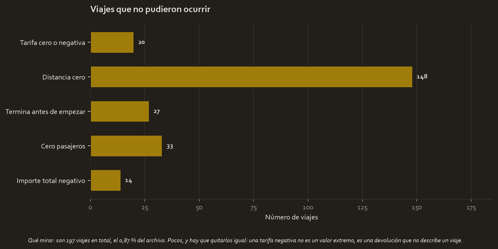

El encargo
La Comisión de Taxis y Limusinas de Nueva York entrega un año de viajes y quiere saber qué se puede hacer con ellos. Antes de cualquier análisis, el encargo de este curso es describir el archivo y prepararlo.
La pregunta
¿Qué contiene este archivo, y qué cuenta que nadie le haya preguntado?
Los datos
C2_2017_Yellow_Taxi_Trip_Data.csv, 22.699 viajes de taxi amarillo y 17 columnas, del 1 de enero al 31 de diciembre de 2017, 364 días cubiertos.
Sin duplicados y sin ausentes, lo cual es raro y hay que decirlo igual que se dicen los problemas.
Lo que hubo que arreglar
Las fechas llegan como texto, en formato MM/DD/YYYY hh:mm:ss AM/PM. Hasta convertirlas no se puede ordenar por tiempo, ni agrupar por hora, ni restarlas. Y hay que decirle el formato explícitamente, porque 9/1/2017 es ambiguo.
La duración del viaje no existe como columna. Hay que construirla restando las dos marcas de tiempo, y es la que destapa el problema siguiente.

197 viajes no pudieron ocurrir, el 0,87 % del archivo:
| Problema | Viajes |
|---|---|
| Distancia cero | 148 |
| Cero pasajeros | 33 |
| Termina antes de empezar | 27 |
| Tarifa cero o negativa | 20 |
| Importe total negativo | 14 |
La diferencia con un atípico es que aquí no hay nada que decidir. Una tarifa negativa es una devolución, no un viaje barato. Un viaje que acaba antes de empezar es un error de reloj. Se eliminan, con su conteo escrito.
Y un pico que parece un problema y no lo es. Hay 514 viajes que cuestan exactamente 52,00 $, el 2,26 % del archivo, y 513 llevan el código de tarifa 2, la tarifa plana del aeropuerto. Sin mirar esa columna, ese pico parecería un montón de carreras sospechosas. Con ella, es un precio fijo y se conserva tal cual.
Los candidatos a atípico, contados sin borrar nada: 2.064 en la tarifa (9,09 %), 2.527 en la distancia (11,13 %) y 1.228 en la duración (5,41 %). Son carreras largas de verdad.
Lo que mostró la exploración
La pregunta que este archivo nunca había respondido, y que contesta solo en cuanto las fechas son fechas:
| Hora punta | Las 19, con 1.454 viajes |
| Hora más floja | Las 4, con 233 |
| Diferencia | 6,2 veces |
| De 17 a 21 h | 6.695 viajes, el 29,5 % del día |
Casi un tercio del negocio ocurre en cuatro horas. Cualquier decisión sobre flota, turnos o precios sale de este reparto y no del promedio diario.
Y tiene una consecuencia concreta hacia adelante: el modelo de tarifas del Curso 4 usa una variable de hora punta, y sus horas salen de este dibujo, no de una convención.
El resultado, traducido
El archivo está en mejor estado del que uno espera: completo, sin duplicados y con los tipos casi todos correctos. Su trabajo real es de estructura, no de limpieza: convertir las dos fechas, construir la duración y quitar 197 filas.
Lo que sí exige criterio es lo que no hay que tocar: los 514 viajes de tarifa plana, que un filtro automático de atípicos habría borrado por caros.
Qué se decide con esto
- Convertir las marcas de tiempo antes que nada, con el formato dicho a mano, y construir la duración.
- Eliminar los 197 viajes imposibles, con su conteo.
- Marcar los de tarifa plana con una variable propia en vez de tratarlos como extremos.
- Usar el reparto por hora para las decisiones operativas, en vez de la media del día.
Limitaciones
- Un solo año y una sola ciudad, y el archivo es una muestra de los viajes de 2017, no todos.
- El reparto por hora es de recogidas, no de demanda: no dice cuánta gente quiso un taxi y no lo encontró.
- Aquí no se ha corregido nada. Este trabajo cuenta y describe, y las decisiones quedan escritas para quien limpie.
Material completo
Estos tres proyectos se construyeron aquí. Los CSV se leen de tu carpeta del curso sin tocarlos, y todo lo demás es nuevo.
Informes y notas
- executive_summary.md 04_reports/executive_summary.md 3.2 KB
- model_results.json 04_reports/model_results.json 1.9 KB
Código
- automatidata_eda.py 02_scripts/automatidata_eda.py 9.0 KB